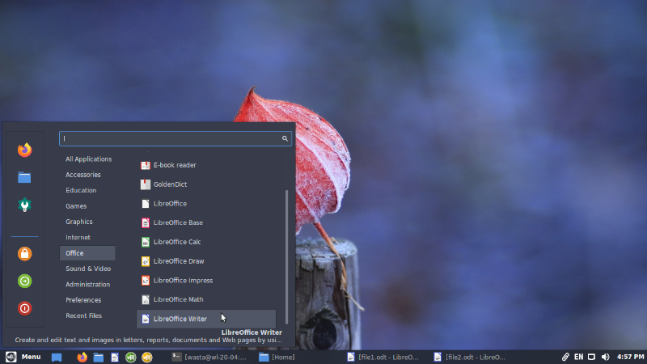

Cinnamon-Layout: Desktop Layout Settings Utility
What is it?
Cinnamon-Layout is a simple utility for changing the layout of the panel (taskbar) and other items of the desktop interface in Cinnamon (the default desktop interface of Wasta-Linux). Different preset layout configurations have been added to Cinnamon-Layout to provide different user experiences for Cinnamon.
How do I use it?
Here is a screenshot of the Cinnamon-Layout dialog:
Simply select the desired layout and click OK. A prompt will then ask if the selected layout should be set as the “System Default” which means any newly created users will be created using this layout. To not annoy other existing users on the system, Cinnamon-Layout will not change their existing desktop layouts.
Below are descriptions and screenshots of the various Cinnamon-Layout desktop layouts:
Redmond7
The ‘redmond7’ layout, which is the default in Wasta-Linux, is intended to give a Windows 7 look and feel to Cinnamon.
Notable items include:
- The bottom panel and Main Menu are similar to Windows 7
- The Main Menu for launching applications is located in the bottom left
- Application windows are grouped together, with a number in the top left of showing the number of running windows for each application
Widescreen
The ‘widescreen’ layout seeks to maximize vertical space for today’s widescreen displays.
Notable differences compared to the default ‘redmond7’ layout include:
- The panel is placed on the left side, with no bottom panel
- Application windows are grouped together, with a number in the top left of showing the number of running windows for each application
- Some of the ‘system tray icons’ in the bottom left of the panel can be be collapsed to reduce the space they take up in the panel
- The panel is semi-transparent (but becomes non-transparent when a window is placed next to it)
Widescreen layout with the system tray collapsed:

Widescreen layout with the system tray expanded:

Cupertino
The ‘cupertino’ layout is meant to loosely match Apple’s macOS / OSX interface.
Notable differences compared to the default ‘redmond7’ layout include:
- The panel is placed at the top
- A ‘dock’ is placed at the bottom: it will hide automatically when windows are placed over it. Dock items can ‘zoom’ when hovering over them
- The panel is semi-transparent (but becomes non-transparent when a window is placed next to it)
Notable shortcomings compared to Apple’s macOS / OSX interface:
- There is no ‘Global AppMenu’ (application menus will show in the application’s own window rather than in the main system panel)
Unity
The ‘unity’ layout is inspired by Ubuntu’s Unity interface, which was Ubuntu’s default from 2011 through 2017.
Notable differences compared to the default ‘redmond7’ layout include:
- The panel is placed at the top
- A non-hiding ‘dock’ is placed on the left side.
- The Main Menu is the top item in the dock, and has the shutdown menu and favorites removed.
- The shutdown menu is in the top right.
- The panel and dock are semi-transparent (but become non-transparent when a window is placed next to them)
Notable shortcomings compared to Ubuntu Unity’s interface:
- There is no ‘Global AppMenu’ (application menus will show in the application window rather than in the main system panel)
- There is no ‘HUD’ (“heads up display”): this is the ability in Unity to quickly find application menu items by pressing ALT then typing to search for the desired setting. The global menu is required for this functionality, and at this time there is no easy way to add a global menu to Cinnamon.
- The end result is that the panel in the Cinnamon-Layout Unity interface is largely unused (except for the right side). So unfortunately this means that vertical space is not as efficiently used as under Unity.
Traditional
The ‘traditional’ layout is meant to mimic the previous Cinnamon defaults which were similar to Windows XP.
Notable differences compared to the default ‘redmond7’ layout include:
- The bottom panel and Main Menu are similar to Windows XP
- Application windows are not grouped

Gnome 2
The ‘gnome2’ layout matches the 2-panel mode that was the default layout in Ubuntu and many other Linux distributions through 2010.
Notable differences compared to the default ‘redmond7’ layout include:
- A 2 panel design is used, with the top panel containing the main menu and system tray, while the bottom panel contains application windows, a workspace switcher, and other items
- Application windows are not grouped